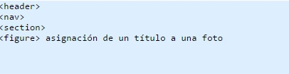

Está pasando. Nos lo estamos perdiendo.
Escríbenos.
La nueva versión del lenguaje HTML (Hypertext Markup Language), va a traer consigo una serie de mejoras importantes, así como nuevas etiquetas de marcado y otras etiquetas que por el contrario van a desaparecer.
Una de los puntos a destacar del lenguaje HTML 5, es que nos ofrece más potencia a la hora del desarrollo web, sin tener que pasar a utilizar otras tecnologías.
Algunos de las nuevas características más interesantes para los autores son APIs para dibujar gráficos en dos dimensiones, incorporar y controlar contenido de audio y vídeo, mantener persistente en la parte del cliente el almacenamiento de datos y para ofrecer a los usuarios la edición de documentos, o partes de éstos, de forma interactiva.
La mayoría de webs tienen una estructura del tipo cabecera - menú - cuerpo - pie, con el HTML 5, en vez de tener que crear divs para cada parte de la página web, podremos utilizar etiquetas específicas para la estructura del sitio. 
Nos olvidamos de etiquetas como < embed> y < object> a la hora de incluir audio, animaciones flash y video.
Para ello con la nueva versión HTML5, dispondremos de dos nuevas etiquetas
< audio> y < video>, así como otra etiqueta < canvas>, que nos va a permitir
trabajar con gráficos y animaciones.
El nuevo lenguaje va a ser mucho más potente, ya que incorpora varias APIS nuevas que nos van a permitir trabajar con Bases de datos en local, interactuar por parte del usuario con distintos elementos de la interfaz -drag & drop (arrastrar y soltar) -, mejora en la Geolocalización.
Resumiendo un poco, el HTML 5, trae consigo, más potencia, mayor rendimiento, menos código, y más simplificación. Mejoras muy importantes, y que van a traer webs con mayor rapidez de carga y mayor capacidad de interacción por parte del usuario. Un lenguaje que se acerca más a la Web 2.0 y quizá porqué no, a la próxima Web 3.0
Ahora falta esperar la compatibilidad con los distintos navegadores, y la revisión del lenguaje por parte del consorcio W3C, que habla del nuevo lenguaje como El futuro del Contenido Web.
En Codeando optimizamos la informacion para que tu aprendas, pruebes, y practiques. Los ejemplos pueden ayudar a simplicar lo que lees. Los tutoriales, referencias, novedades y ejemplos estan en constante revision.